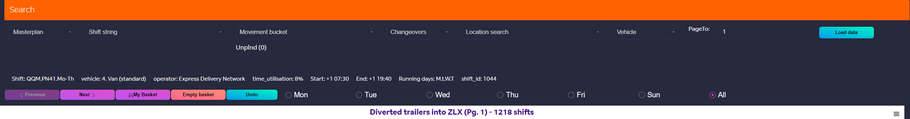
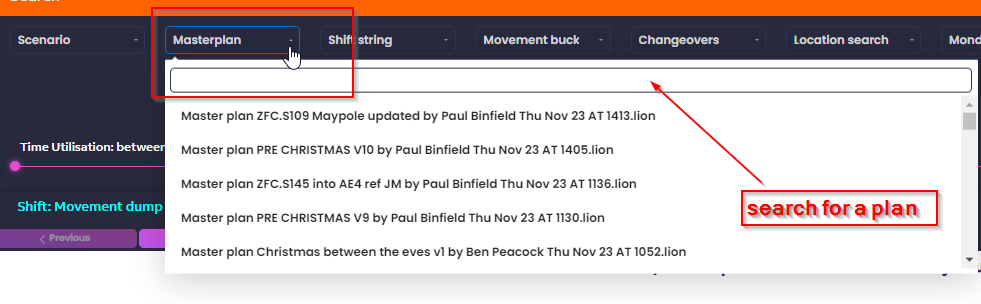
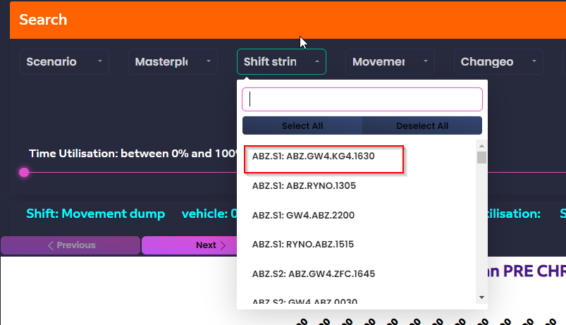
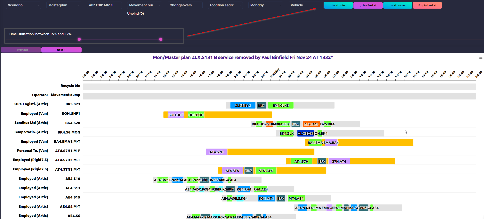

SearchPortal¶
{kind=link}
MasterPlan-Dropdown¶
{kind=link}
On click, the list of all master plans available in LION_SHARED_DIR\MasterPlanFiles will be displayed, sorted based of creation timestamp. These master plans is visible for all users, and no distribution is required. The final driver plan is generated using master plan which is shared with stations, hubs and other stakeholders, including ROCS team.
Shift string-Dropdown¶
{kind=link}
A list of movements and corresponding shifts are available to select from in the case user is interested in a subset of the schedule running certain lane, managed by certain location, etc. Type your keyword in the search bar and then select from the proposed options within the drop-down list. The press Load data to load underlying shifts
Movement bucket-Dropdown¶
Pending Movements for Scheduling:
In the scheduling process, you may encounter movements that haven’t been planned yet. These movements are accessible for manual intervention in the Movements Bucket dropdown list. Once a movement is selected, it will be transferred to the “Movement Dump” area.
Key Points:
Unique Identification: Each movement in LION is associated with a distinct digital movement ID.
Movement Management: Transferring a movement to the Movement Dump area will remove it from the list of unplanned movements.
Please ensure careful handling of movements to maintain an efficient and error-free scheduling process.
Changeovers-Dropdown¶
List of changeovers available in the selected wekkday. After selection of a changeover from the list, the underlying shifts carrying the selected changeover will be loaded by pushing the button Load data.
{kind=link}
Utilisation-Slider¶
{kind=link}
This slider can be used to set filter on the shifts with a certain range of utilisation. By definition, Utilisation is the total loaded movements driving time
divided by the entire shift. For example, the shift AE4.S9 belew, has only one loaded movement from EMA to LHR which is 2 hours and 40 minutes driving time.
Considering that the total shift is 12 hours, the utilisation of AE4.S9 will then be 22%.
{kind=link}
Runtimes Data Set¶
Given the presence of multiple mileage and runtime scenarios influenced by various parameters, including maximum speed, the user has the option to select a specific scenario for analysis and scheduling. This enables the examination of the effects related to the chosen scenario. For instance, by recreating a schedule assuming a maximum speed of 44 mph, the user can assess its impact on the required number of drivers and the overall network cost.